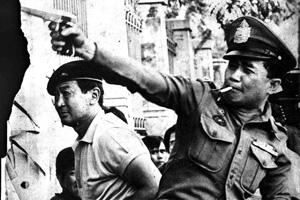

ความเดือดดาลอันเกิดจากภาพถ่ายการแสดงล้อการแขวนคอได้นำส่วนที่เกิดเอง แต่รูปแบบการฝึกและการเกณฑ์กำลังกึ่งทหารในช่วงปีที่ผ่านมาแสดงให้เห็นว่าความรุนแรงต่อฝ่ายซ้ายมีการวางแผนล่วงหน้าเป็นอย่างดีคณะปฏิรูปการปกครองแผ่นดินแต่งตั้งธานินทร์ กรัยวิเชียร ที่พระมหากษัตริย์โปรด เป็นนายกรัฐมนตรี ธานินทร์เลือกคณะรัฐมนตรีด้วยตัวเองโดยไม่สนใจรายชื่อของคณะผู้ยึดอำนาจการปกครอง รวมทั้งสมัครเป็นรัฐมนตรีว่าการกระทรวงมหาดไทย พลเรือเอกสงัดคงเป็นรัฐมนตรีว่าการกระทรวงกลาโหมและผู้บัญชาการทหารบกที่เพิ่งเกษียณ พลเอกบุญชัย ได้รับแต่งตั้งเป็นรองนายกรัฐมนตรี มีการล้อมจับผู้ต้องสงสัยฝ่ายซ้ายสามพันคน สื่อทั้งหมดถูกตรวจพิจารณา และสมาชิกในองค์การคอมมิวนิสต์ถูกลงโทษประหารชีวิต มีการกวาดล้างครอบคลุมมหาวิทยาลัย สื่อและบริการสาธารณะ รัฐบาลสั่งห้ามเผยแพร่ภาพเหตุการณ์ทั้งหมด ตลอดจนเรื่องราวของเหตุการณ์โดยเด็ดขาด ตามคำสั่งรัฐมนตรีว่าการกระทรวงมหาดไทย สมัคร สุนทรเวช รวมถึงคณะปฏิรูปฯ ยังมีคำสั่งห้ามจำหน่ายหนังสือพิมพ์แทบทุกฉบับ เป็นเวลา 3 วันหลังเหตุการณ์ และตรวจสอบเนื้อหาของสื่อมวลชนอีกหลายประการ ทั้งยกเลิกการสอนเรื่องการเมืองในโรงเรียนต่าง ๆ อีกด้วย ประชาธิปไตยค่อย ๆ ได้รับการฟื้นฟูภายในโครงการ 12 ปี รัฐบาลชุดนี้เป็นชุดที่นิยมเจ้าและต่อต้านฝ่ายซ้ายดุดันที่สุดในประวัติศาสตร์ไทย แต่ก็ปราบปรามการฉ้อราษฎร์บังหลวงอย่างหนักด้วย ฝ่ายซ้ายเมืองราว 800 คนหลบหนีไปยังพื้นที่ชายแดนซึ่งคอมมิวนิสต์ควบคุมอยู่หลังรัฐประหาร มีการโจมตีกองโจรเป็นระลอกตามมา ซึ่งเพิ่มถึงขีดสุดในต้น พ.ศ. 2520 ไม่ช้า ลัทธิคลั่งชาติของธานินทร์ก็ได้บาดหมางกับแทบทุกภาคส่วนของสังคมไทย ทั้งรัฐบาลยังถูกวิจารณ์ว่ามีแนวคิดขวาจัด ดำเนินแนวนโยบายรุนแรง ส่งผลให้มีนักศึกษาจำนวนมากต้องหลบหนีเข้าป่าไปร่วมกับพรรคคอมมิวนิสต์แห่งประเทศไทย ซึ่งต่อมาก็ปะทะกับเจ้าหน้าที่รัฐหลายครั้งจนมีผู้เสียชีวิตเป็นอันมาก อีกทั้งเสถียรภาพของรัฐบาลเองก็ไม่มั่นคง เพราะถูกครอบงำจากคณะนายทหาร จึงมีความหวาดหวั่นกันว่าจะมีการรัฐประหารซ้อนเกิดขึ้น จนเช้าวันที่ 26 มีนาคม พ.ศ. 2520 มีความพยายามรัฐประหารโดยมีพลเอก ฉลาด หิรัญศิริ อดีตรองผู้บัญชาการทหารบก เป็นผู้นำ ซึ่งเชื่อกันว่าเป็นนายทหารอีกคณะหนึ่งที่จะรัฐประหารซ้อนคณะของพลเรือเอกสงัด แต่กระทำการไม่สำเร็จ พลเอกฉลาดถูกประหารชีวิต ฐานเป็นกบฏในราชอาณาจักร รัฐบาลชุดนี้สิ้นสุดลงด้วยรัฐประหาร นำโดยพลเรือเอก สงัด ชลออยู่ โดยอ้างถึงความมั่นคงของรัฐ และความล่าช้าในการร่างรัฐธรรมนูญ
การดำเนินคดี

ไม่มีการจับกุมผู้ลงมือฆ่า แต่นักศึกษาและประชาชนที่รอดชีวิต 3,094 คนถูกจับกุมภายในวันนั้น ผู้ถูกจับกุมเกือบทุกคนถูกตำรวจรุมซ้อมเมื่อมาถึงสถานที่คุมขัง นอกจากนี้ ยังมีพยานว่า ตำรวจเรียกผู้ถูกจับกุมว่า "เชลย" อันสื่อว่า ตำรวจกำลังทำสงครามกับนักศึกษา ต่อมา ส่วนใหญ่ได้รับประกันตัว แต่ยังเหลือ 27 คนถูกอายัดตัวเพื่อดำเนินคดี พลเอก เกรียงศักดิ์ ชมะนันทน์ นายกรัฐมนตรีสมัยที่ปล่อยตัวผู้ต้องหากล่าวว่า "แล้วก็ให้แล้วกันไป ลืมมันเสียเถิดนะ" ส่วนผู้ฆ่าได้รับความดีความชอบในฐานะผู้พิทักษ์ชาติ ศาสนา พระมหากษัตริย์ มีแกนนำนักศึกษาและประชาชนถูกตั้งข้อกล่าวหาใน "คดี 6 ตุลาคม" สุวรรณ แสงประทุมกับพวกรวม 18 คนถูกตั้งข้อกล่าวหาก่อกบฏ ก่อจลาจล ต่อสู้และพยายามฆ่าเจ้าหน้าที่รัฐ และรวมกันกระทำการอันเป็นคอมมิวนิสต์ คดีเริ่มในศาลทหารเมื่อวันที่ 25 สิงหาคม 2520 รัฐบาลกำหนดให้ต้องหาไม่มีสิทธิใช้ทนายความพลเรือน ต่อมา หลังการกดดันทั้งในและต่างประเทศและรัฐบาลธานินทร์ล้มไป จำเลยจึงมีสิทธิแต่งตั้งทนายความพลเรือน คดีนี้ยังกลายเป็นเวทีของประชาชนในการประท้วงนอกศาลเรื่องสิทธิเสรีภาพด้วย รัฐบาลจึงรีบนิรโทษกรรมผู้ต้องหาทั้งหมดในวันที่ 15 กันยายน 2521 ก่อนข้อมูลจะรั่วสู่สาธารณะ และคงเป็นความต้องการของรัฐบาลในการปกป้องเจ้าหน้าที่รัฐที่ใช้ความรุนแรงจากการฟ้องร้องในอนาคตด้วย